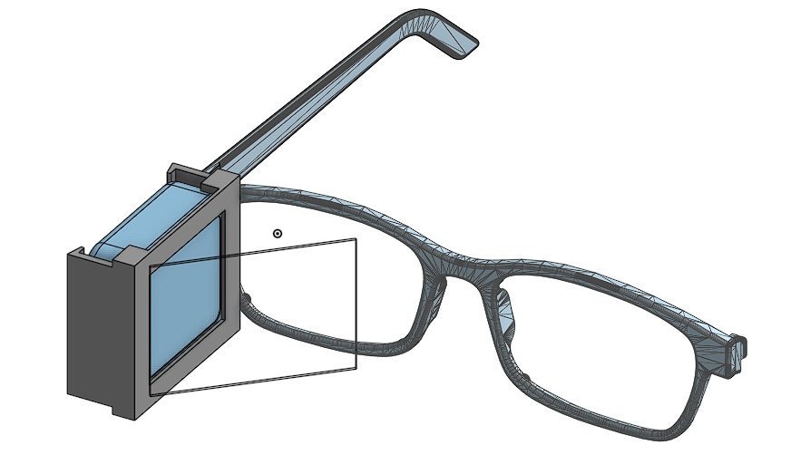
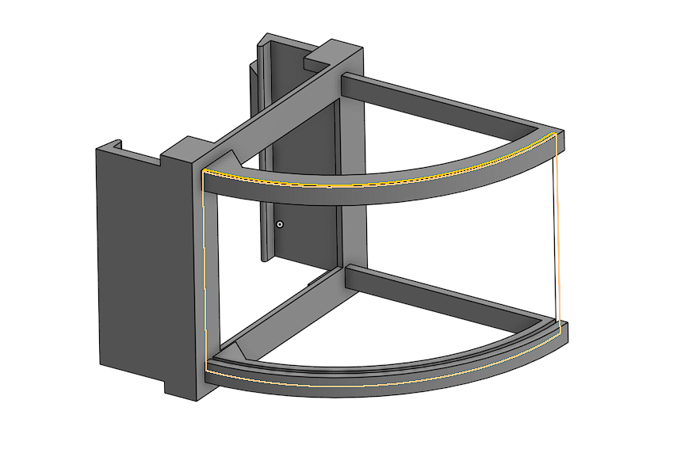
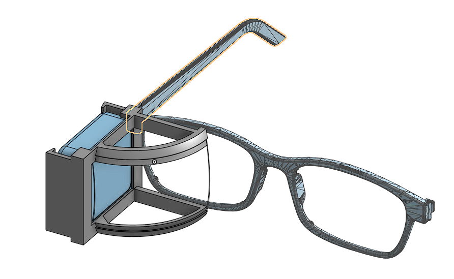
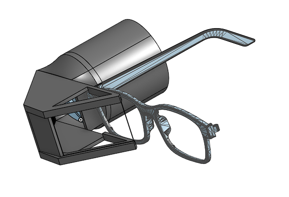
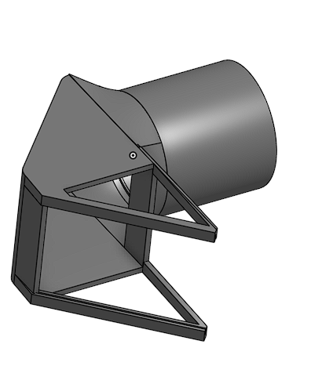
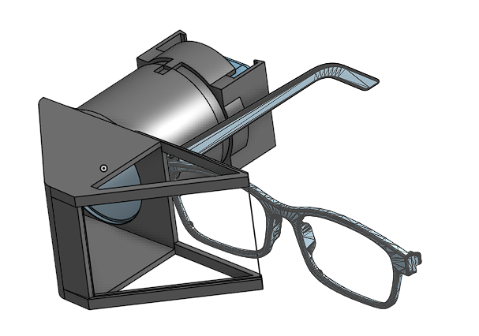

Projects
AR Glasses
In DevelopmentAlzheimer's AR Memory Assistant
- Engineered an ultra-low-cost, lightweight AR headset delivering facial recognition and passive memory prompts
- Optimized for elderly accessibility with high-contrast text streaming and ergonomic counterbalance
- Tested 6 different optical architectures prioritizing infinite focus and maximum eyebox
SideKick
In DevelopmentAI-Powered Sports Training Platform
- Building personalized training plans using LLM-powered recommendation system
- Implementing targeted skill development with step-by-step training instructions
- Integrating OpenCV-based video processing for real-time feedback and comparison
- Creating side-by-side video analysis with expert demonstrations
- Building a scalable AI coaching app on GCP, using a PostgreSQL database, React Native, and Redis + Celery.
- Built a REST API powered by an LLM to serve real-time video analysis and personalized feedback with Firebase auth.
- Engineered an OpenCV pipeline for gamified form analysis, integrating engaging ML insights with the UI.
VisLink
1st Overall @ SacHacks VIVision-Powered Computer Assistance
- Developed VisLink, an accessibility tool enabling immobile patients to interact with computers hands-free.
- Implemented facial tracking and blink detection using MediaPipe and OpenCV, reaching ~80% accuracy.
- Engineered a low-latency vision pipeline achieving 80% accuracy in real-time facial signal processing for cursor control.
- Added speech recognition pipeline for voice-based navigation with ~70% accuracy.
- Integrated vision controls, blink detection, smoothing algorithms, and speech recognition, boosting tool reliability.
- Currently working with doctors to develop an open-source version of this software to benefit patients
Manny.ai
SacHacks VIIAI-Powered CAD Refinement and Analysis Engine for Startups
- Developed an AI copilot transforming NLP inputs into geometric modifications using an OpenAI o3-mini intent pipeline.
- Architected an Indexed Boundary Representation (B-Rep) structural design converting STEP files into logical nodes optimizing LLM token limits efficiently by 80%.
- Leveraged CadQuery scripts alongside Topological Graph Traversal parsing meshes via Boolean functions securely mitigating OpenCASCADE kernel faults.
- Generated automated heatmaps and dynamic vertices using Numpy logic, Trimesh physics, and React Three Fiber rendering.
Buck-It
DiamondHacks 2026Gamified Bucket-List Social Media App
- Built a unified social architecture mapping user discovery, planning, group collaborations, and media workflows seamlessly around bucket objects.
- Constructed a production-ready FastAPI logic layer to implement custom group joining, secure API route generation, and dynamic activity timelines.
- Integrated Supabase querying infrastructure directly mitigating structural bottlenecks during UX onboarding processes.
- Established structured interaction channels leveraging Gemini constraints to generate functional plans predictably without producing erratic UX.
PrepNotch
In DevelopmentLLM-Powered Personalized Tutoring Platform
- Designing an agentic tutoring system that creates dynamic learning plans from user goals and documents
- Built a LangGraph-based multi-agent workflow for lesson generation, quiz creation, and feedback refinement
- Implemented RAG and AWS to integrate uploaded textbooks and syllabi into lessons
- Engineered tool-using agents with context engineering, persistent memory, and progress tracking
- Developed a scalable Flask API using LangChain to automate lessons, quizzes, and generate personalized user feedback.
- Created a custom table of contents-based indexing system which optimized LLM query efficiency for learning materials.
OpenLabel
1st in Track @ DiamondHacksVision & LLM-Powered Allergy and Diet Recommender
- Built a dietary preference agent that evaluates food packaging through image input and ingredient scanning
- Built an image-processing pipeline to parse product images and ingredient labels using Gemini + CV
- Generated user-specific buying recommendations using LLMs based on allergies and goals
Alethiea
Berkeley AI HackathonAgentic-Driven Healthcare Management
- Developed a personalized pill tracker that offers medication guidance and autonomous alerts
- Used OpenCV and Gemini API to detect and classify pills from images; tracked dosage timelines
- Designed agent framework to auto-adjust routines and send alerts or contact physicians as needed
MentalQuest
4th PlaceAI-Powered Mental Health Support Platform
- Integrated Google Gemini to provide personalized mental health support and tailored self-care tasks
- Developed gamified self-care experience through interactive daily quests
- Designed intuitive UI/UX for inclusive and seamless user experience
- Architected a full-stack mental health app with responsive React frontend, a Flask backend, and a MongoDB database.
- Integrated Gemini API to power AI-driven self-care recommendations and interactive user progress tracking features.
- Delivered a gamified user experience with daily quests, journaling, awards, and chatbots, securing 4th place.
- Competed against graduate students and upperclassmen as a freshman
LightYear
Space Tourism Website
- Designed and developed an interactive space tourism website for Webmaster 2023
- Implemented user login functionality and engaging animations
- Created responsive design with interactive features for enhanced user experience
Technical Skills
Languages
Frameworks & Tools
Concepts & Expertise
Memory Assistive AR Glasses
Ultra-low-cost, high-contrast, and ergonomic augmented reality for Alzheimer's patients
Problem Statement & Objective
"For individuals living with Alzheimer's disease, the progressive loss of memory regarding loved ones and past conversations causes profound emotional pain and social isolation. While augmented reality (AR) has the potential to provide real-time cognitive assistance—such as facial recognition and contextual memory cues—existing smart glasses are prohibitively expensive, physically heavy, and feature low-contrast displays that are unreadable for elderly eyes."
The Solution: There is a critical need for an ultra-low-cost, highly ergonomic AR solution optimized for massive, high-contrast text. This proof-of-concept headset was engineered specifically to seamlessly deliver passive memory prompts (e.g., "This is your son, John") to help patients retain their independence and connection to their families.
The core display design was based on the Pepper's Ghost effect and inspired by the open-source CheApR glasses.
1. Optical Engineering & Architecture
The "L-Block" Light Pipe
Designed an un-tapered 50mm enclosed optical tunnel to act as a mechanical baffle. This preserves a massive collimated light beam, preventing vignetting and maximizing the "eyebox" so the user does not lose the image if the glasses shift.
Lens Selection
Transitioned from a heavy 50mm solid glass dome to a 50mm PMMA Fresnel lens (60mm focal length). This flattened the incident angle of the light, minimizing chromatic aberration while drastically reducing the headset's physical weight.
Reflective Array
Utilized a 50x50mm first-surface mirror mounted at a 45-degree angle to redirect the 50mm optical envelope without clipping the beam.
Distortion Correction
Replaced a curved aerodynamic front visor with a perfectly flat polycarbonate beamsplitter to eliminate astigmatism and maintain infinite focus for the collimated text.
Design Iterations (CAD)
So far, I've designed 6 versions in CAD, refining the optical and mechanical characteristics each time:

V1: Screen w/ Straight Polycarbonate
Problem: Text appeared right in front of the eye without optics, making it impossible for elderly users to read at optical infinity.

V2: Curved Polycarbonate Reflector
Problem: Introduced astigmatism and warped the text severely, ruining legibility.

V3: Birdbath Reflector
Problem: Solved the text focus issue nicely, but birdbath lenses were extremely difficult and expensive to source.

V4: L-Shape with Glass Plano-Convex Lens
Problem: Reducing the aperture size to barely fit the screen introduced severe edge vignetting, reducing the "eyebox" tolerance.

V5: Enlarged Apertures + Reflectors
Problem: Got rid of vignetting, but the massive solid glass dome made the headset extremely front-heavy and unwearable for extended periods.

V6 (Current): Acrylic Fresnel Lens
Solution: Achieved optical infinity using an adjustable focus slider, drastically reducing weight with 10% Gyroid infill and PMMA materials, all while preserving the required massive text rendering un-vignetted.
2. Mechanical & CAD Design
Weight Optimization
Reduced the right-temple optical engine weight from 175g down to roughly 120g using a Fresnel lens and 10% Gyroid infill.
Adjustable Focus
Engineered a telescoping, friction-fit focus slider with a 0.2mm tolerance gap and 1mm chamfered guide paths for precise manual focal calibration per user.
Ergonomic Counterbalance
Currently in the planning phase. Will not use an onboard battery since it relies on tethered phone power, simplifying the left-temple weight balancing against the right-temple optical engine.
3. Hardware & Compute Stack
-
Microcontroller
Seeed Studio XIAO ESP32S3 Sense. Chosen for its tiny form factor, integrated microphone, and ample GPIO pins.
-
Display
1.8-inch SPI display (TFT/AMOLED) connected via standard header pins.
-
Vision Pipeline
OV2640 wide-angle camera utilizing an extended 120mm FPC ribbon cable to reach the front, keeping the processor on the frame.
4. Software Stack & AI Pipeline (To be implemented)
Tethered Edge Computing
To keep the glasses ultra-lightweight and battery-free, all heavy logic runs on a tethered iPhone via a dedicated React Native application. The iPhone transmits the display output directly through a USB-C connection to the ESP32 on the glasses.
Core Model Features
RAG & LLM Integration
Uses context-aware retrieval and Language Models to process conversational history and generate passive memory prompts.
Facial Detection Models
Continuously scans the incoming feed to identify faces and cross-reference them with the user's stored loved ones.
Voice AI
Listens and transcribes real-time audio through the ESP32S3's microphone, syncing auditory cues with visuals.
OpenCV Annotations
Applies high-contrast bounding boxes and textual labels onto the video feed, optimized for readability on the 1.8-inch display.
5. Current Progress & Next Steps
Phase 1 (Complete): Optical math verified, hardware collisions solved, and CAD models locked in for the 60mm focal length housing. Bill of Materials sourced.
Phase 2 (In Progress): Shifting focus to firmware. Developing a C++ WebSocket server on the ESP32 to receive and render live text streams over Wi-Fi/Bluetooth from a paired iOS device.
Yonder Dynamics - Software Projects
Autonomous Systems Engineering & Optimization
Overview
As the Software Lead at Yonder Dynamics, I manage the migration and development of our autonomous systems stack. My core contributions range from building real-time kinematics (RTK) integrations, overhauling navigation architectures, optimizing point cloud generation, and pioneering autonomous inverse kinematics logic for complex manipulation tasks.
1. RTK GPS Integration & Navigation Overhaul
Objective: Phase out the outdated Pixhawk-based navigation system in favor of a modern dual-antenna RTK setup for our autonomous rover to handle complex trajectory tracking.
- Implemented dual-antenna RTK GPS hardware pipelines by writing custom Python firmware that constantly pushes RTCM corrections from the base station.
- Migrated away from Pixhawk's internal EKF (Extended Kalman Filter) by developing YAML configurations to launch and manage a custom ROS EKF node.
- Successfully achieved sensor fusion by combining IMU data from an onboard OAK-D camera with absolute heading and positional data from the new RTK modules.
2. Autonomous Keyboard Typing via Inverse Kinematics
Objective: Create an autonomous subsystem capable of executing precise keystrokes natively without external telemetry networks.
- Placed 4 ArUco markers surrounding a generic keyboard boundary for frame reference.
- Utilized the intrinsic matrix of a hand-mounted camera to establish precise 3D positioning mapping between the end-effector arm and the keyboard's spatial plane.
- Developed complex Inverse Kinematics (IK) algorithms that dynamically calculates joint angles to move the end-effector arm optimally to the position of any requested key.
3. Webots Scalable Simulation Environment
Objective: Eliminate hardware-testing bottlenecks by generating a high-fidelity digital twin of the rover physics.
- Built a comprehensive Webots simulation environment derived from custom URDF (Unified Robot Description Format) models of the mechanical subteam's designs.
- Configured a continuous ROSbridge infrastructure that networks simulated sensory inputs/outputs (actuators, cameras) over to the actual autonomous ROS logic running inside a Docker container.
- Enabled 100% asynchronous and parallel software development workflow safely independent of physical hardware build timelines.
4. Advanced Obstacle Avoidance Pipelines
- Streamlined point cloud processing generated by the OAK-D stereo camera block to more effectively cull noise and identify steep obstacles.
- Constructed reliable 2D/3D dynamic occupancy grids mapping the navigable environment based off stereo depth.
- Refined the fundamental grid navigation code using the Theta* (Theta-star) algorithm, significantly enabling smoother, faster any-angle path avoidance.
- Engineered loss-of-signal fail-safes (rover recall) utilizing a software heartbeat signal logic over the telemetry network.
5. Edge AI Migration (YOLO)
Objective: Decrease power consumption and decouple vision processing by migrating detection software across architectures.
- Successfully oversaw the migration of the core object detection YOLO stack from a central Nvidia Jetson dependency block.
- Deployed natively onto the dedicated onboard NPU capabilities of an OrangePi.
- Integrated RKNN YOLO parsing directly against the camera pipeline, heavily freeing up compute resources for the navigation subsystems.
Yonder Dynamics
Oct 2024 - PresentSoftware Lead
- Integrated RTK GPS with Pixhawk, boosting accuracy from 10m to 10cm and eliminating 30% of navigation failures.
- Designed physics-based simulations using custom URDF models for asynchronous testing of autonomous logic.
- Engineered robust traversal routines and a loss-of-signal fail-safes, reducing failures by 30% during URC competitions.
- Managed agile sprint planning in Notion, improving cross-functional team coordination for the autonomous subsystem.
Physics-based Simulation
This is the physics-based simulation I developed. In the video, I am showcasing driving the rover manually in a simulated desert environment. I'm also showcasing the visualized depthmap from a virtual depth camera on the rover for obstacle avoidance.
System Acceptance Review
Watch a demonstration of the rover's capabilities, including waypoint navigation, obstacle avoidance, and return-to-base functionality.
Pragma Edge (IBM Partner Company)
Oct 2025 - PresentAI Engineering Intern
- Architected REST APIs for asset management, facilitating communication between IBM Maximo and external services.
- Integrated IBM Watsonx chatbot into Maximo workflows, enabling natural language querying of asset data.
- Developing computer vision modules to automate defect analysis, optimizing manufacturing inspection pipelines.
- Integrating MLOps pipelines in Python (OpenCV, TensorFlow) for scalable enterprise data flows for anomaly detection.
UCSD Advanced Robotics Control Lab
Mar 2025 - Sep 2025Research Assistant
- Built motion planning algorithms achieving 200% faster runtime, 10% gauze savings, and 100% wound coverage.
- Reconstructed 3D meshes from RGB-D scans with Open3D + SDFs, reaching 80% accuracy for field medical robotics.
- Implemented MCTS + heuristics, cutting compute by 30% and enabling near real-time robotic gauze tape application.
- Integrated algorithms into humanoid prototypes, collaborating with researchers on clinical feasibility testing.
FIRST/VEX Robotics Instructor
Jun 2025 - Sep 2025Instructor & Coach
- Coached 28 students across 4 teams, teaching CAD, Java, Python, Git workflows, and Computer Vision principles.
- Guided FRC team to prototype a swerve robot in 1 week and deploy vision-based autonomous navigation in 2 weeks.
- Improved technical collaboration and design reviews by organizing PDRs, debugging sessions, and Git workflows.
Triton Racing
Oct 2024 - Jun 2025Electrical Subteam Member
- Collaborated on the electrical system design for Triton Racing's Formula SAE electric vehicle, focusing on performance, safety, and reliability.
- Designed and fabricated a Tractive System Status Indicator (TSSI) light mount using SolidWorks for CAD modeling and 3D printing for rapid prototyping, ensuring compliance with FSAE safety regulations.
- Learned and applied basic PCB design in Altium, contributing to subsystem circuit layouts and gaining hands-on exposure to embedded electrical hardware.
- Conducted Finite Element Analysis (FEA) in SolidWorks to validate structural integrity of mounts and components under simulated race conditions.
- Utilized Gantt charts to manage project timelines, track milestones, and ensure alignment across the electrical subteam's deliverables.
- Gained practical experience in motorsport engineering, working in a fast-paced, interdisciplinary team to design and iterate components under real-world performance constraints.
Brains4Drones
Mar 2022 - Dec 2024Software Engineering Intern
- Led development of ``PreCheck'' LiDAR tool, cutting drone mission failures by 60% with terrain modeling and analysis.
- Built TensorFlow crack detection pipelines, automating utility inspections and reducing manual review time by 50%.
- Designed GPU CUDA pipelines with KNN, increasing point-cloud obstacle detection speed for safer autonomous flight.
- Attracted 2 enterprise clients by showing PreCheck's simulation capabilities and REST API-driven planning features.
PreCheck Demo Video
Watch a demonstration of the PreCheck LiDAR-driven drone mission planning tool in action, showcasing automated flight path generation and obstacle avoidance for power line inspections.
FIRST Robotics Challenge (Team 9088)
Jun 2022 - May 2024Software Lead/Team Co-Founder
- Led the team to state-level competition, developing innovative robotics control systems
- Implemented swerve drive mechanism with PathPlanner and Limelight for precision control
- Developed command-based architecture for modular robot subsystem control
- Collaborated across teams for seamless system integration
- Engaged in STEM outreach and mentoring initiatives
NASA Highschool Aerospace Scholars
November 2022 – June 2023Pressure and Temperature Mitigation Subtopic Manager
- Applied systems engineering principles to design and develop a sustainable lunar habitat
- Led research and implementation of RHUs for thermal regulation, PCAs for atmospheric control
- Collaborated with multidisciplinary team for habitat subsystem integration
- Presented engineering solutions to NASA professionals
FIRST Tech Challenge
October 2018 – May 2022Team Founder, Software Lead (RoboFalcons 14626)
- Founded and led team to regional championships, overseeing strategy and development
- Developed advanced control systems using Java for holonomic drive and computer vision
- Designed and 3D-printed custom parts using Fusion 360
- Led STEM demonstrations and secured sponsorships from industry leaders
UTD Quality of Life Machine Learning Workshop
June 2023 – July 2023Participant
- Developed deep learning model for lung cancer X-ray classification
- Applied data preprocessing and feature extraction techniques
- Collaborated on medical imaging dataset analysis
Taekwondo
2012 – Present3rd Degree Black Belt
- Earned gold medals in multiple Taekwondo America national tournaments
- Represented UCSD at World Taekwondo UC Irvine PacWest tournament
- Trained and mentored newer students in sparring techniques
- Practiced across multiple studios nationwide
Technology Student Association
Aug 2022 – May 2024Team Lead, Competitor
- Led team to develop LightYear web application, advancing to state-level
- Designed portable radiation detection system using Fusion 360
- Solved engineering challenges under time constraints
University of California San Diego
Bachelor of Science in Computer Science, Minor in Business
Core Coursework
CSE 11
Introduction to Programming and Computational Problem-Solving: Accelerated Pace
Course Details →